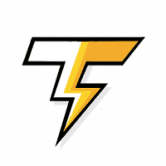 ThunderSwap ThunderSwap 是一个在 BSC 上具有自动减排、回购燃烧和链上推荐计划的下一代收益农场。 ThunderSwap 拥有雨水农场和云池，您可以通过质押您已经拥有的 LP 代币和其他代币来赚取 $TNDR
TigerFinance TigerFinance 是第三代自动通缩收益农场，具有反鲸鱼机制、丰收锁定、推荐收益、被动燃烧和减排。 交易规模 公司销售规模：50 至 10 亿美元以上 类型：收购融资、延迟
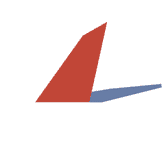 Timeleap Finance TIMELEAP FINANCE - Polygon 上的第一个农场，具有可验证的最大供应和无限的农业潜力 Timeleap Finance 是由单产农民为单产农民创建的新时代高 APR 农场。我们正在 Polygon 链上创建一个高收益资产
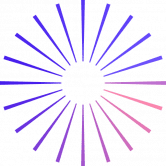 TimeWarp Chrono.tech 生态系统由一套区块链产品和服务组成。 这些产生的收入的 100% 将用于回购 TIME 并将其分配给质押其代币的用户。 在 TimeWarp 智能合约中锁定您的 TIME 代币并获得： 每周奖
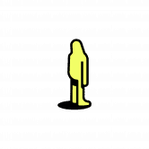 Tinyman Tinyman 是一个去中心化的交易协议，利用 Algorand 区块链的快速安全框架为交易者、流动性提供者和开发者创建一个开放和安全的市场。 Tinyman 由一支拥有丰富金融科技背景的
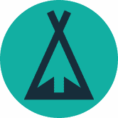 TiPiDao 简介 TiPiDao 的意义何在？我如何从提皮道中受益？ 提皮道是什么？ TiPiDao 是基于 TPD 代币的去中心化储备货币协议。每个 TPD 代币都由 TiPiDao 国库中的一篮子资产支持，赋予其不
TitanBull Finance 什么是天牛金融？ TitanBull Finance (TBULL) 是 Polygon (MATIC) 网络上的全新单产农业和 Staking 平台。 我们是经验丰富的智能合约/UI/UX 开发团队，对加密货币的未来有着良好的愿景。 这是
TreeDefi 我们所做的一切都是为了一个好的事业。 TreeDefi 是一个 Yield Farming 项目，通过一个名为 TREE 的上限代币和一个名为 SEED 的无上限通缩代币，专注于通缩代币经济学。 我们平台上
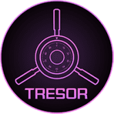 Tresor Finance 最好的自动质押和自动复合 DEFI 3.0 协议 • 高固定APY in – 383,025.80% • 在您的钱包中自动进行质押和复利。 • 每15 分钟支付一次利息：每天96 次！ • 每笔交易都会自
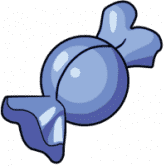 Trick or Treat Farm 不给糖就捣蛋农场是 Fantom 网络上的一个收益农场。在推出之前，该农场已经收到了 RugDoc “一些风险”的审查结果，即 JagoSafer 绿旗，并通过 RugDoc 锁定了他们的流动性。 初始铸
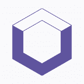 TripleFi TripleFi 是一种衍生 DEX，它使用户能够以高达 25 倍的杠杆率交易加密货币，并投资 LP 池以获得可观的回报。 目前 TripleFi 在 Polygon Network 上可用，您可以在 Ethereum Rinkeby 测试网络上进行刺
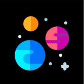 Trisolaris Trisolaris 在 Aurora 引擎上是排名第一的 Dex，Aurora 引擎是在 Near 生态系统中运行的与 EVM 兼容的区块链。 特征 简单直观的用户界面 高速交易和微不足道的费用 提供流
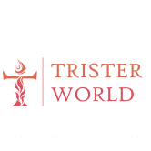 Trister's World Trister’s Lend是Trister World的第一个生态应用，其中还包括Swap、Vault、Insure、Oracle、NFTBase、Mirro
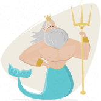 Triton Farm Triton 是一个去中心化投资平台，由币安智能链区块链提供支持，由 Triton 去中心化自治组织 (DAO) 管理。 Triton Foodwork 的产品在温度和湿度受控的温室中种植，采用专有的水培和垂
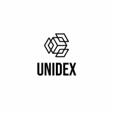 UniDex UniDex 提供了一个替代且信息丰富的界面，可以与您已经很受欢迎的 DeFi 项目（如 1inch、Perp.fi 和 Opyn）进行交互。 UniDex 旨在将 CeFi 交易中提供的功能
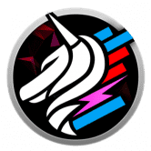 UniDexBot 欢迎来到 UniDexBot！我们的功能： 云机器人 限价单 小径站 止损 循环策略 狙击手 Dex 聚合器（在 dex 之间找到最优惠的价格） 图表 Unidexbot 支持 Fantom、E
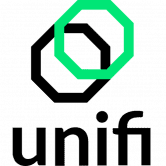 Unifi Protocol Unifi Protocol DAO 是一组非托管、可互操作、去中心化和多链的智能合约，为下一代 DeFi 开发提供构建模块。 Unifi 协议旨在为开发人员提供功能性的 DeFi 构建块，将多个区块链连
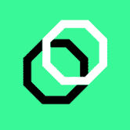 Unifi Protocol Unifi 协议是一组非托管、可互操作、去中心化和多链的智能合约协议，为 DeFi 开发提供构建块。 Unifi 协议由 Sesameseed 开发，考虑到更大的图景，允许在链上智能合约解决方案
UniLend Finance 无许可借贷流动性交易闪电贷治理 任何 ERC20 代币都可以在没有任何实体控制上市过程的情况下上市，从而使每个代币都可以访问 UniLend 的功能。 用户可以解锁其代币的
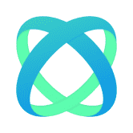 Unite Finance Unite Finance 的灵感来自 tomb.finance，是 Harmony 主网上的第一个算法稳定币，通过铸币税与 1 ONE 的价格挂钩。 Tomb 在 Fantom 区块链上运行，并与 FTM 的价格 1:1 挂钩。 Tomb
United Dao 介绍 United DAO DEFI 的 NEXT EVOLUTION United DAO 是基于原生代币 UTD 的下一代去中心化协议。 United DAO 旨在通过为我们的利益相关者建立真正的信誉、强大的公司治理和积极的风险管理来开创
UnusDao Unus 最初是一个基于 UDO 代币的去中心化储备货币协议。每个 UDO 代币都由 Unus 国库中的一篮子资产（例如 BUSD）支持，赋予其不能低于的内在价值。 Unus DAO 以 UDO 为基
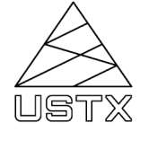 USTX DEX 该项目围绕两个支柱构建：USTX 代币和 DEX。该代币是 TRC20 合约，部署在 Tron 区块链上，实现了所需的功能，以非常低的费用实现简单的交易。 DEX 是项目的核
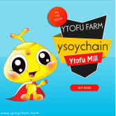 Ysoy Chain farm Ysoy 令牌 (Ysoy?) Ysoy没有采矿过程。Ysoy 的总固定供应量为 10000 YsoY 代币。Ysoy 代币协议由一组非竞争性、可互操作、去中心化和智能合约组成，这些合约由
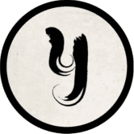 Yugen Finance Yugen Finance 是一个 DeFi-Yield 聚合器，通过聚合各种举措的收入来产生资金。该平台还附带一个可在桌面和移动平台上使用的基本应用程序。这使得 Yugen Finance 成为第一个通过其他平
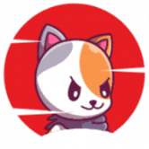 YuklaSwap YuklaSwap 是 DeFI 空间中的一个地方，我们的用户可以赚取高收入，同时为我们的 DEX 提供流动性/在我们的池中质押加密资产/参与我们的间歇泉池/在我们的游戏平台上
Yumcha Finance Yumcha 已完成概念验证阶段，并正在微调我们的方法，以根据反馈和实际结果为我们的用户提供最佳体验。 Yumcha 是一种去中心化金融，由 BSC 网络上的智能合约提供支持
YumiSwap 即时交换代币：无需注册或账户。只需连接您的 MetaMask 钱包即可。 YumiSwap 是一个供用户交易、赚钱和游戏的加密世界。它是 ASTAR 上具有 AMM、NFT 和 GameFi 等功能的项目的
Zappy Zappy 是 Telos 网络的自动做市 (AMM) 去中心化交易所 (DEX)。 Zappy 正在 Telos 上为 DeFi 构建一站式生态系统，从 DEX 本身、ZAP 治理令牌和多样化的收益农业机会开始。在 24 小
ZCore Finance 尽早获得获得 ZEFI 的高收益 DeFi 农场协议。 强大可靠的开发团队。立即加入！ ZCore Finance - 良种农业提供流动性、质押 LP 并在通缩代币 ZEFI 中获得即时奖励 Feeless ZEFI 和其他 ZCore 代币
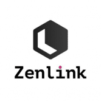 Zenlink Zenlink 是基于 Polkadot 的底层跨链 DEX 协议，致力于成为 Polkadot 的 DEX 可组合枢纽。 Zenlink DEX 协议通过接入基于 Substrate 的终极、开放、通用的跨链 DEX 协议，使所有平行链能够一键构建 DEX 并实
 Zest Protocol Zest Protocol 使用三种不同的代币来允许用户投机基础资产，同时获得被动收入。 ZSP（Zest 合成协议令牌） ZPS 是 Zest 协议实用代币，参与者通过该代币获得协议产
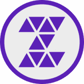 ZIPPY Zippy 是建立在 Thundercore 区块链之上的去中心化应用程序集合。 dapps 通过 ZIPPY 令牌连接在一起。用户可以通过收益耕作来铸造 ZIPPY，以获得各种收益。 Zippy dice 是 Zippy 生态系统
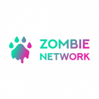 Zombie Network 每天 1% 的固定利息利润 投资者从 Zombie Network 购买 BLOOD 代币后可以存入它们。 Zombie Network 为投资者存入的 BLOOD 代币存款支付 1% 的每日利息利润。 当投资者不提取每日利息利润，并通
ZoomSwap V2 ZoomSwap 是一个跨链基础设施项目，为第一层区块链、AMM 和合作项目建立流动性。在 IoTeX 上推出，农民有一个令人兴奋的机会来赚取 $ZM 和其他项目代币。 ZoomSwap 受益于 IoTeX
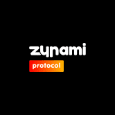 Zunami Protocol Zunami 是与稳定币合作的 DAO，它通过简化与 DeFi 的交互来解决当前收益农业协议的主要问题，使其更容易、更便宜，同时通过区分和重新平衡用户资金来提高盈利
Goblin Finance 在这个基于 Fantom 链的 DeFi 平台上安全赚钱，2021 年最好的链！我们将创建一个安全和自动化的平台，用户可以在该平台上质押他们最喜欢的 LP 来赚取 Gobli
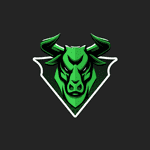 GoBull Swap GoBullSwap - Yield Farming 概念 通过 GoBullSwap 上的 Yield Farming，用户可以利用将他们的加密货币置于赌注中赚取高额利息。 根据 DeFi 分析和排名平台 DeFiPulse 的数据，DeFi 协议在这些